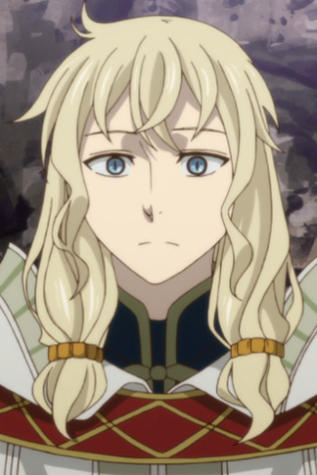

|
Fai D. Flourite |
- Tsubasa Chronicle
- Tsubasa Chronicle The Movie: The Princess in the Birdcage Kingdom
- Tsubasa Chronicle 2nd Series
- Tsubasa Chronicle: Tokyo Revelations
- Tsubasa Chronicle: Spring Thunder
|
Fai D. Flourite or Yuui is the country wizard from Celes. He is energetic, while being enigmatic at the same time. Fai appears to be happy-go-lucky and good-natured, and acts very carefree. He carries a deep emotional burden, values his own life. He has high-levels of magic. |
 |
Jellal Fernandes |
- Fairy Tail
- Fairy Tail OVA
- Fairy Tail (2014)
- Fairy Tail OVA (2016)
- Fairy Tail: Final Season
|
Jellal Fernandes is a childhood friend of Erza. He is a very honest person. He is an user of Heavanly Body Magic. He is a recurring character. |
|  |
Lindel |
|
Lindel is Elias' magician master who lives in the Land of Dragons. He is the caretaker of the Dragons' Aerie. He is a kind and calm person.
|
 |
Van Hohenheim |
- Fullmetal Alchemist: Brotherhood
|
Van Hohenheim is the father of the Alchemy Protagonists, Edward and Alphonse Elric. He is a brilliant and well known alchemist. |
 |
Waver Velvet |
- Carnival Phantasm
- Fate/Zero
- Fate/Zero Season 2
- Fate/Zero Remix
- Fate/kaleid liner Primsa Illya
- Fate/kaleid liner Prisma Illya 2wei!
- Fate/stay Night: Unlimited Blade Works 2nd Season
- Fate/Apocrypha
- Lord El-Melloi II's Case Files: Rail Zeppelin Grace Note - A Grave Keeper, a Cat, and a Mage
- Lord El-Melloi II Case Files: Rail Zeppelin Grace Note
|
Waver Velvet or Lord El-Melloi II is a student(soon teacher) at Clock Tower, an institute of the Magus Association. He is a mage with a recognized magical lineage of three generations. Waver is an intelligent young man but some a spoiler brat. He is also the Master of Rider in the Fourth Holy Grail War. As he aged , he became a highly respected professor within Mage's Association. |